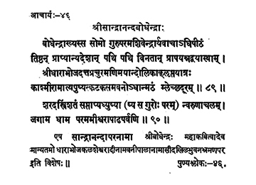

46. आचार्य - 46 - सान्द्रानन्दबोधेन्द्रः
बोधेन्द्राख्यः ••• म्लेच्छदूरम् ॥ ८९ ॥
शरदस्त्रिंशतं ••• पर्वणी ॥ ९० ॥
एष ••• विशेषः ॥
He, Soma, initiated with the title Bodhendra by the preceptor Paraśivendra adorned the pīṭha and visiting countries in the palanquin exquisitely decked with gems offered by Bhoja, the king of Dhārā, inculcating faith in the principles of Advaita in the minds of those who venerated him on the path safeguarded the Maṭha from the invaders (mlechas) with the help of the minister of the Kashmiri King Kalaśa.
Having stayed in the pīṭha for thirty-seven years, he reached the Supreme Abode at Aruṇācala on the New moon day of the month Āṣāḍha in the year Īśvara.
This preceptor Bodhendra, also known as Sānandrānanda, was honoured for poetical excellence by Kings - Bhoja, Kalaśeśvara and others and was intent on travelling through the earth.
